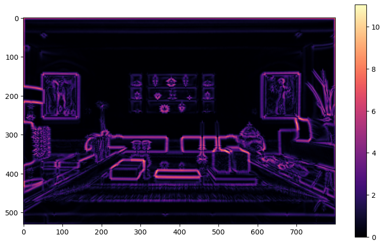
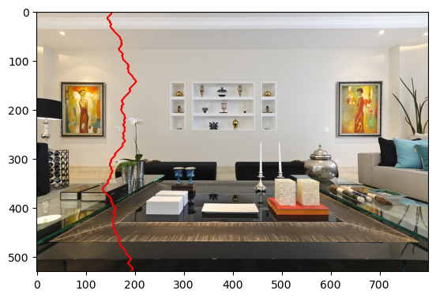
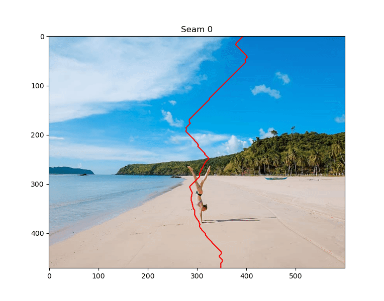

Homework 3: Seam Carving (50 Points)
Chris Tralie
Overview / Logistics
The purpose of this assignment is to give you practice implementing a dynamic programming solution in the service of a cool application in image processing.
Click here to download the starter code for this assignment. When you are finished, upload seams.py to canvas, along with your art contest submission. Also indicate the title of your art piece and your name/pseudonym to be displayed on the class web page.
Learning Objectives
- Use dynamic programming to devise and implement a polynomial time algorithm to a discrete optimization problem over an exponential solution space.
- Work with 2D/3D arrays in python
- Use parallel arrays that hold different information about the same data
- ....
- Profit??
Background
Now that we're in the thick of dynamic programming solutions, let's look at an interesting problem in image processing. that benefits from this approach. Let's suppose we have the following 530 row 800 column image of a living room

but we want to make it smaller in width down 500 columns. One thing we could do is uniformly stretch across the x-axis to get the following:
However, this distorts features and throws off the aspect feature all over the image (everything is too thin). Instead, what if we remove some of the whitespace and things we won't notice in the image to preserve some of the foreground objects first. This is the goal of seam carving, and a result could look something like this:
We will now discuss a dynamic programming algorithm to do this, which is described in a paper by Avidan and Shamir back in 2007.
Seams
At the core of seam carving is the notion of a seam, which is a connected sequence of pixels from top to bottom (it could also be from left to right, but we will focus on top to bottom without loss of generality). There is one pixel in every row, and from row to row the pixels either
- Move to the left by one column
- Stay in the same column
- Move to the right one column
To come up with a measure of what a good seam to choose is, we create something that Avidan and Shamir refer to as an energy image. A pixel in an energy image should have a high value if we want to preserve it and a lower value if we are OK to remove it. We then score a seam by summing up all of the values in the energy image that it passes through, and take the one with the lowest score.
One simple energy function that works well is the so-called gradient magnitude image. Basically, it's a measure of how strong the edges are in the image. If we are in a region of uniform color, the values will be very small, but if we are at the boundary between objects, the values will be large. This will keep seams away from the boundaries of objects in the image. Below is an example of the gradient image on the living room scene
So the discrete optimization problem boils down to finding the seam whose sum through the gradient image is minimized. One design difficulty is that there are many possible seams in the image. In fact, for an MxN image, there are roughly \[ O(N3^{N-1}) \] possible seams. We're going to have to get creative to come up with an efficient algorithm to find the one with minimum cost. Your first task will be to think of recurrence rules that are amenable to dynamic programming
RGB Images And Parallel Arrays
Even though we're computing seams using an MxN energy image, we want to remove the seam from the original image, which actually has 3 channels: red [0], green [1], and blue[2]. This means the original image is actually an MxNx3 image, so you will have to remove the seam from 3 2D arrays. To access channel k in row i and column j in an image I, the syntax is I[i][j][k]. You can also access a slice of part of a row through all channels with the syntax I[i, j1:j2, :] (this is not needed, but it may help make certain code more succinct)
Assignment Tasks
Below you will walk through a sequence of tasks to implement the dynamic programming algorithm to extract seams, and you will remove them from the image
Devise Dynamic Programming Rules (5 Points)
Before you get started coding, your will first come up with a recurrence relation that can be used to compute the optimal seams efficiently using dynamic programming. In particular, consider the cost of the minimum cost seam that starts anywhere on the top and and which ends at a particular pixel [i, j] somewhere in the middle of the image, as depicted below

How would you related the cost of this seam to cost of other subproblems at locations [m, n] (m ≠ i, n ≠ j), in terms of the energy image E[i, j]?
In your writeup, specify
- The recursive rules in terms of subproblems; i.e. if the matrix of all subproblems is called C, then how can we write C[i, j] in terms of other elements of C? (note that C is parallel to the energy image)
- What are the base cases for C?
It should be possible to fill costs of optimal seams to all pixels in polynomial time following your rules. No need to describe how you'll actually store this and loop through and compute it at this time...just the recurrence rules are fine.
Compute Optimal Seam Cost (15 Points)
Now that you've established recursive rules for dynamic programming, implement a method that uses them to compute the cost of the minimum cost seam from top to bottom. Code to compute energy images has been provided to you in seam.py. For example, if you run the following
Then G will hold a 530x800 array of energy values. If you've implemented the dynamic programming algorithm properly, then you will see that the optimal seam has a cost of around 135
NOTE: The minimum cost seam can end anywhere on the bottom row, so you'll need to check all rows
Backtrace Optimal Seam (10 Points)
Now that you've computed the cost of the optimal seam, modify your method to backtrace and return the optimal vertical seam. If your images is M x N, then you should return a list with M row indices, since there is exactly one element of the seam for each row.
I've provided a method plot_seam to help you plot seams on top of the images. Suppose your method for computing the seams is called energy_img_seam. Then the following code
Should plot the following image:
Remove Seam (10 Points)
Create a method remove_seam that takes as input an original MxNx3 RGB image and a vertical seam of length M, and which returns a new Mx(N-1)x3 image with the seam removed. As an example, if you remove 100 seams from LivingRoom.jpg, you will see the following sequence of seams

Notice how the seams avoid the paintings and the objects on the floor to the extent possible
Erasure (5 Points)
One neat trick that we can play with seam carving is to force the energy image to be zero in some region. This is referred to as a mask. Consider the following example
Image |
Mask |
 |
 |
Then we get the following sequence of seams

Notice how the seams all go through the mask region. Here's the final result
It's like she was never there! Sort of. We'd still have to get rid of the shadow, but we can do that by removing horizontal seams also (if you're interested in a quick way to remove horizontal seams, you can switch the rows/columns with np.moveaxis and reuse the code you already have).
Your Task: Write a method that takes in two images: the original image and a mask image, and which returns the gradient image of the original image, set to be 0 in all of the places where the mask image is 0. Then, pass along this masked energy image as normal to the method that finds seams, and verify that you can replicate the results on the above image.
Mandatory Art Contest (5 Points)
This algorithm does not work equally well on everything, but it can lead to some interesting "artistic" results. For instance, let's suppose we remove 70 vertical seams in the image ctralie18.jpg provided with the starter code (me at age 18). Then this leads to the following sequence of seams
{kind=link}

With the final result below
For an easy 5 points, create one such "blooper" with your code. Or, alternatively, provide an example where seam carving seems to work very well. In either case, you should include the original image, as well as a description of how many seams you took.